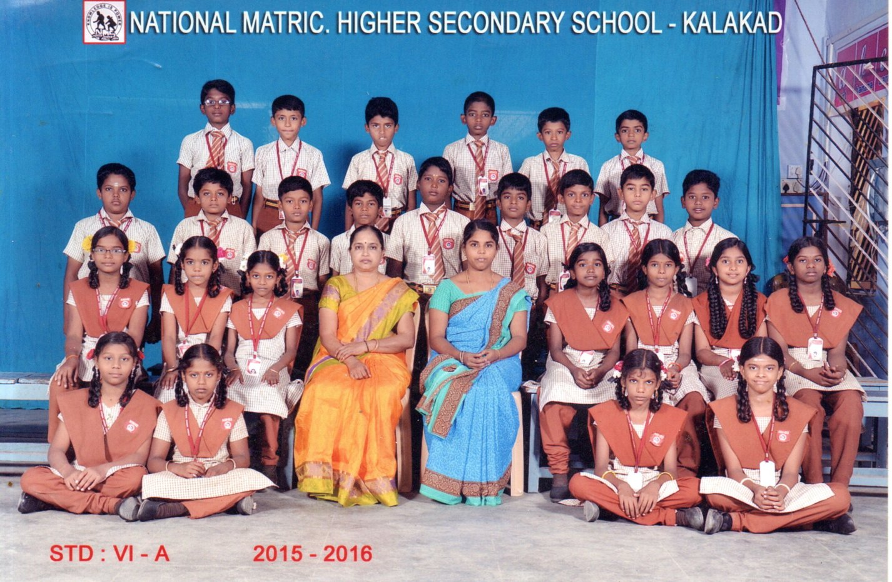
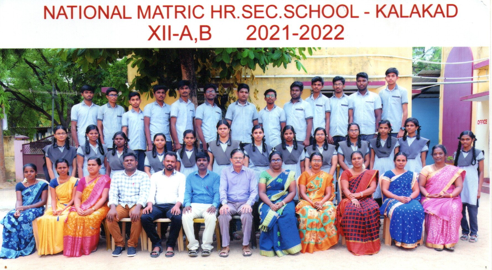
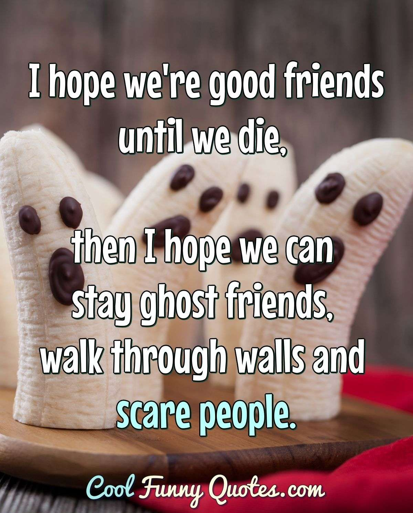

💕💖Happy Birthday ✨Sabreen✨💖💕
 
Hey Sabreen 👋

Namma partially ten years ah friends ah irukom, we was seperated aporam last of the schooling years kuda nama avalav close ilah. As a childhood friend you done your part fantastically in the past 😊, still i am being disappointed by the people who i was been close once they just need somethings from me to be in my times of life and just few guys gives me satisfied feels through their smiles and presence.... Naan adhan friends nuh romba head lah ellaraiyum vachikamaaten but naan yarukellam close friend nuh mind lah fix anaenoh avagalukuh try give my best. You may question me palah varshamah we didn't knew each other then how it is nuh but i have thousands of memories and joys with my childhood friend shafeeqa sabreen ✨. I can still remember, oruh birthday kuh nee jiguh jiguh nuh dress lah oruh coconut chocolates kudtha and that was a wonderful memory. Happy Birthday sabreen you are a best one, Hope you may have blessed life and nallah profession lah oruh annabelle pei mari nalla valandhu bio lah periya achievement panuvah nuh namburaen i am kidding naan enaiyeh naan dhan digital lah oruh change kodu varaporaen nuh namburaen and so deeply have a firm in you. Nee enah mari romba alagah ilainalum okay konjam alaguh dhan so nalah partner choose pani life lah best ah develop pannuh. Well unkita oruh unmaiya naan last ah soluraen nee siricha nallah dhan irukuh even chinna vayasuula paatha adhe ressembalance but konjam control panuh aatha inum nalla irukum then i missing the arathu chappee yellai nuh kathuvaah paaruh paah adhu dhan unakuh speciality eh 😍. BYE SABREEN👋 "Inum konjam wishes venumah andha Yellai nuhh button irukulah adha oruh hit pannuh 🎊".
And naan christmas apove thanvir kittah unakuh cake vagikudukanum nuh try panunaen but i was busy, later appan interest kaatalah so andha cake tharalaiyeh nuh enah thitadha inum two days lah eppadiyaatum unakuh cake ah sethurraen Annabellee 🎃!